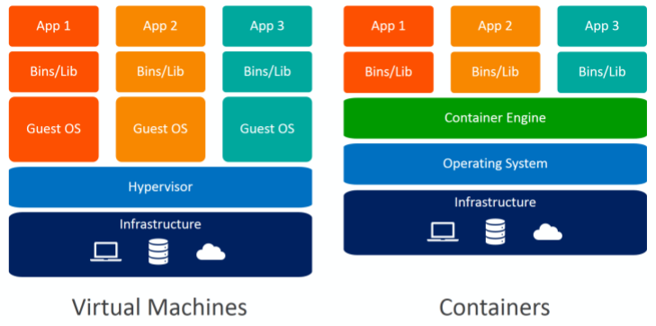

Containers for Research


March 27th 2020
Got a question?
Feel free to put questions up in chat as we go along, and I'll try to answer
Whoami
John Hodrien
- Research Software Engineer from Research Computing
- Previously:
- Teaching Assistant in the School of Computing
- Researcher in Grid Computing and Visualisation
- Linux/IRIX System Administrator
- Contact me...
Agenda
- What are Containers?
- Basic Container commands
- Container run throughs:
- Using prebuilt containers
- Building containers
- Using GPUs with containers
- Accessing host files
- How do I get it?
- Further notes
What are Containers?
Is this a familiar conversation?
- "I've got some really cool code, want a go?"
- "Yes sure, send it to me!"
- "Err, it's giving me an error?"
- "Well, it worked on my machine..."
- Docker, Singularity
- Open source tool for building and managing virtual environments in a single workflow
- Using a single file you can specify the exact environment required for your workflow
- Doesn't require an underlying Hypervisor (Virtualisation platform)
- Runs on Windows, macOS and Linux
- Virtual Machines vs Containers 
- Containers vs Images vs Recipes
- Registries/Hubs
Basic Singularity commands
- Running a simple preexisting container
From SingularityHub (recipe):
$ singularity run shub://GodloveD/lolcow
From DockerHub (recipe):
$ singularity run docker://godlovedc/lolcow
Singularity pull
- You're likely to want an actual copy of an image, as repeatedly requesting a remote image causes problems:
$ singularity pull shub://GodloveD/lolcow
$ singularity run lolcow_latest.sif
Singularity Definition File for lolcow(Recipe)
A simple definition for creating an image
# Basic Singularity.def
BootStrap: docker
From: ubuntu:16.04
%post
apt-get -y update
apt-get -y install fortune cowsay lolcat
%environment
export LC_ALL=C
export PATH=/usr/games:$PATH
%runscript
fortune | cowsay | lolcat
Cleaning up Singularity
Cleaning up what you've done
$ singularity cache list
$ singularity cache clean
$ rm lolcow_latest.sif
Container run throughs
Test all this code out yourself using the containers_examples directory in the GitHub Repo for this presentation
- Before I do anything, setup a vagrant VM as learnt in the previous TechTalk
$ vagrant up
- Use a simple gnuplot container
$ singularity pull shub://icaoberg/singularity-gnuplot
$ singularity run --app gnuplot singularity-gnuplot_latest.sif
- Let's actually build a container
$ singularity build bastet Singularity.def
You're going to need sudo/root/vagrant at this point.
- Accessing host machine files on Containers
$ singularity shell singularity-gnuplot_latest.sif
- Home directory and /tmp are mounted by default
- Additional paths can be mounted using -B
$ singularity shell -B /nobackup:/nobackup singularity-gnuplot_latest.sif
Getting software installed to use Containers
- Singularity is already installed on most Linux campus systems
- Docker will not be installed
- Available as a module on ARC
- Put in a request if it's not available to get it installed
Further coding/reading
Coming up
- The next TechTalk (date TBC) will be on Conda!
- Join us for an informal chat with the Research Computing Team
- Subscribe to the Research Computing mailing list by sending an email to research-computing-join@lists.leeds.ac.uk with Subscribe as the subject